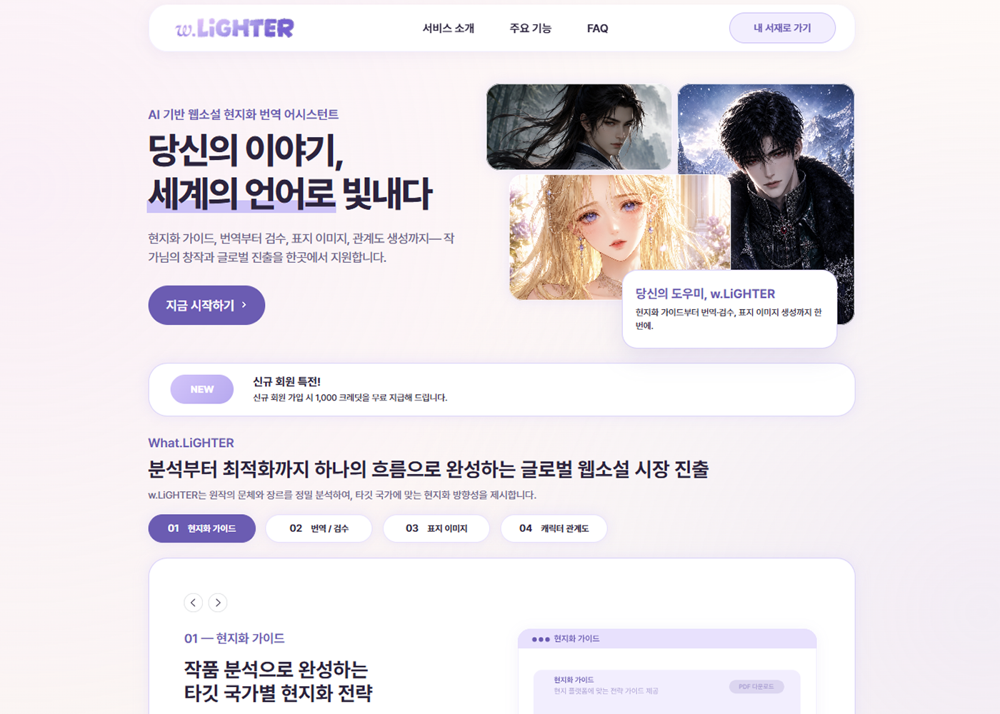
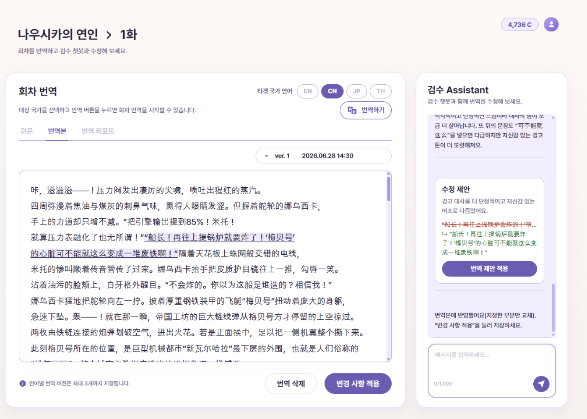
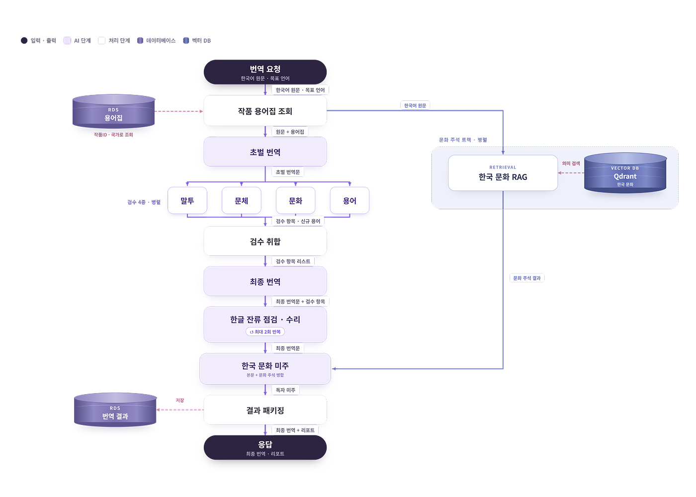
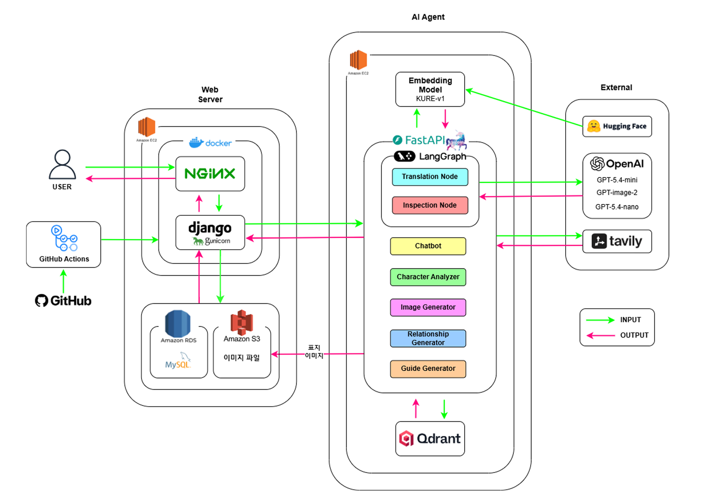
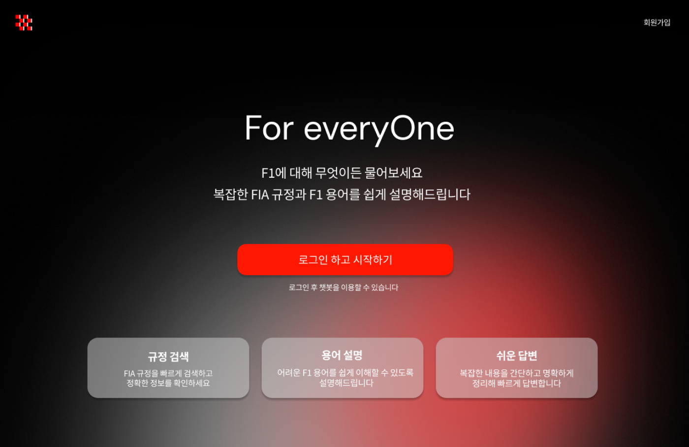
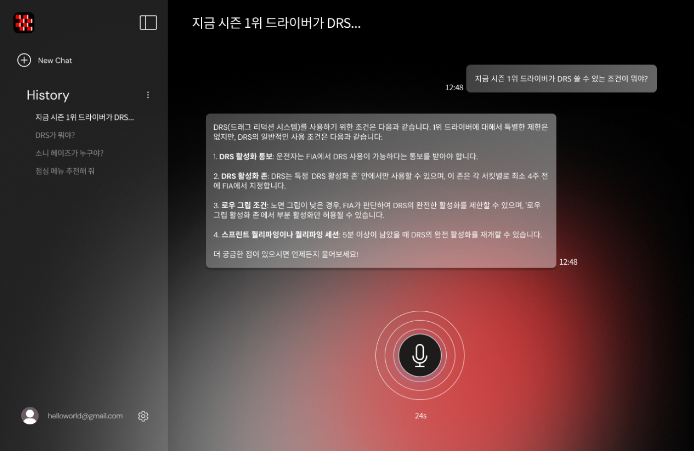
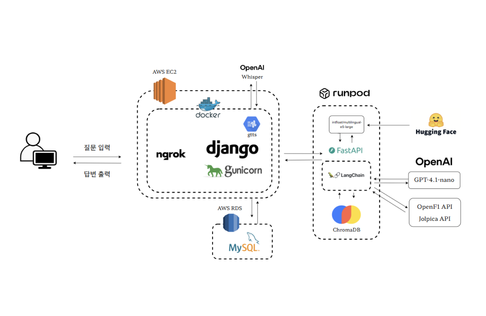
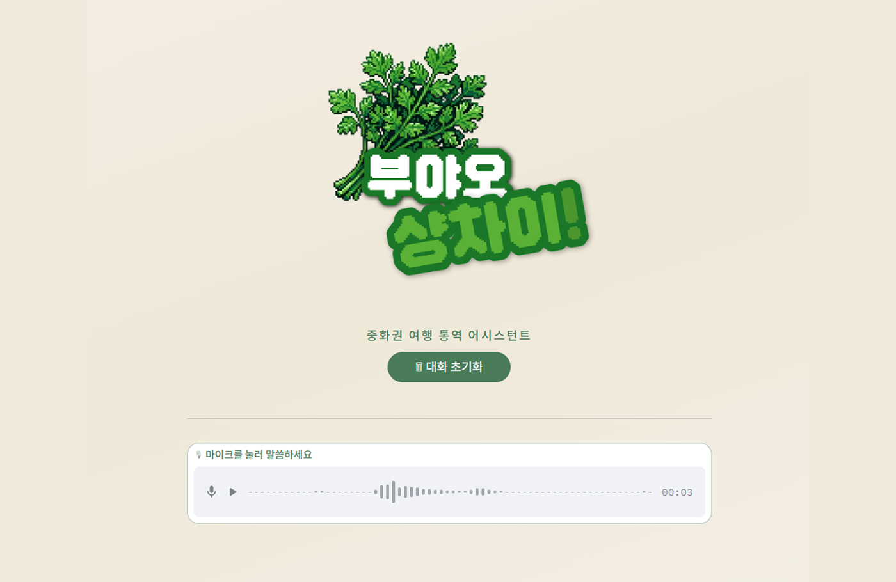
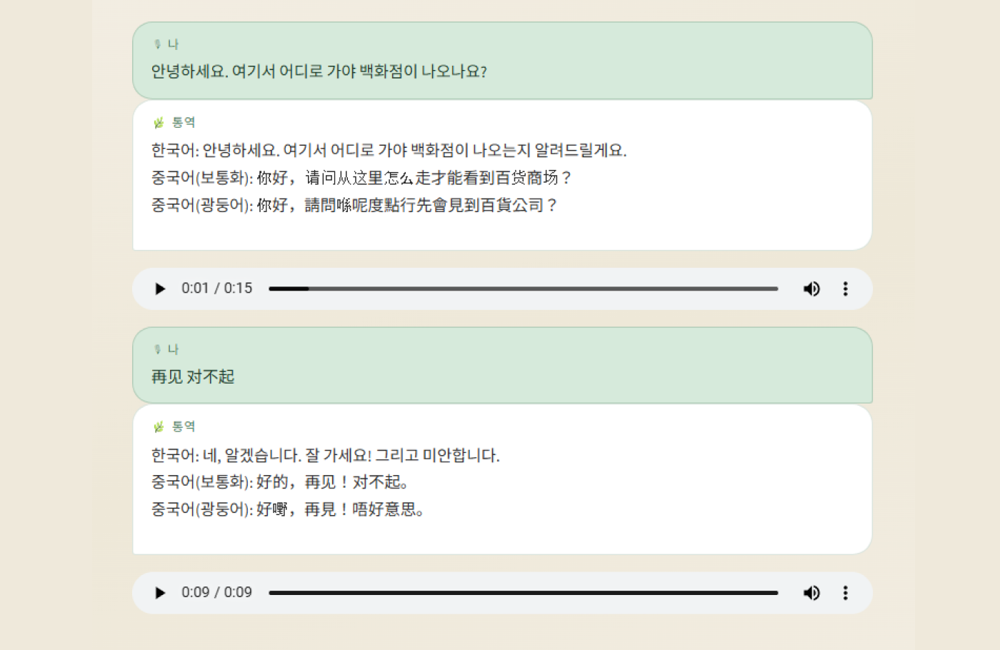
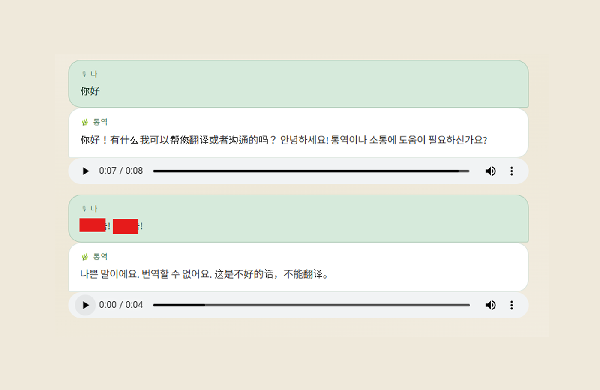

키스템프엠엔씨에스 · 인재개발실 사원
- LG계열사 신입·경력 채용 프로세스 운영
- 임직원 700명대 → 900명대 성장 시기 채용 운영
- 채용 플랫폼 7개 운영 및 다이렉트 소싱으로 인재풀 구축
- SAP·사내 인사 시스템의 입사자 데이터 관리
Carry over 임직원 인재추천비 제도의 지급 방식 오류를 발견해 실제 지급이 원활할 수 있도록 지급 프로세스를 다시 정착시켰습니다.

사람에 관한 데이터를 실무에서 다뤄 본 경험을 통해 사람을 위한 AI 서비스 개발에 도전하고 있습니다.
2년 6개월 동안 채용과 경영지원 실무를 담당하며 채용 플랫폼 7개의 지원자 데이터, SAP와 사내 인사 시스템의 입사자 정보, 정부지원사업 정산 자료를 직접 관리했습니다. 작은 숫자라도 어긋났을 때 무엇이 잘못되는지를 현장에서 겪었습니다.
SK Family AI Camp에서는 F1 규정 챗봇의 RAG 파이프라인과 임베딩·벡터DB를, 웹소설 번역 플랫폼의 프론트엔드와 배포 환경을 담당했습니다. 데이터를 정리하는 단계부터 서비스가 사용자에게 닿는 지점까지 다뤄 보았고, 이제 실무에서 직접 해결해 보고 싶습니다.
Skills
SKN24 · 6인 · 담당: 웹 서비스 구현(Django), AWS 배포 및 CI/CD




SKN24 · 5인 · 담당: RAG 파이프라인 설계, 모델 워크플로우 구성, FastAPI 추론 서버 구축



개인 프로젝트



Carry over 임직원 인재추천비 제도의 지급 방식 오류를 발견해 실제 지급이 원활할 수 있도록 지급 프로세스를 다시 정착시켰습니다.
Carry over 주관 기관이 요구하는 형식과 증빙에 맞춰 자료를 정리하고 검증하는 일을 담당했고, 사업 신청부터 종료까지 전 과정을 운영했습니다.
학력
졸업 · 학점 3.48 / 4.5
교육
수료 · 데이터 분석, AI 웹 서비스 개발
자격증 · 어학
정리되지 않은 정보에 구조를 세우는 일을 해 왔습니다.
함께 일할 수 있는 기회를 기다립니다.